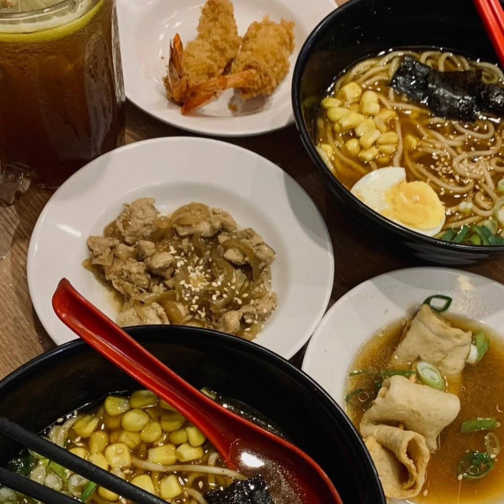
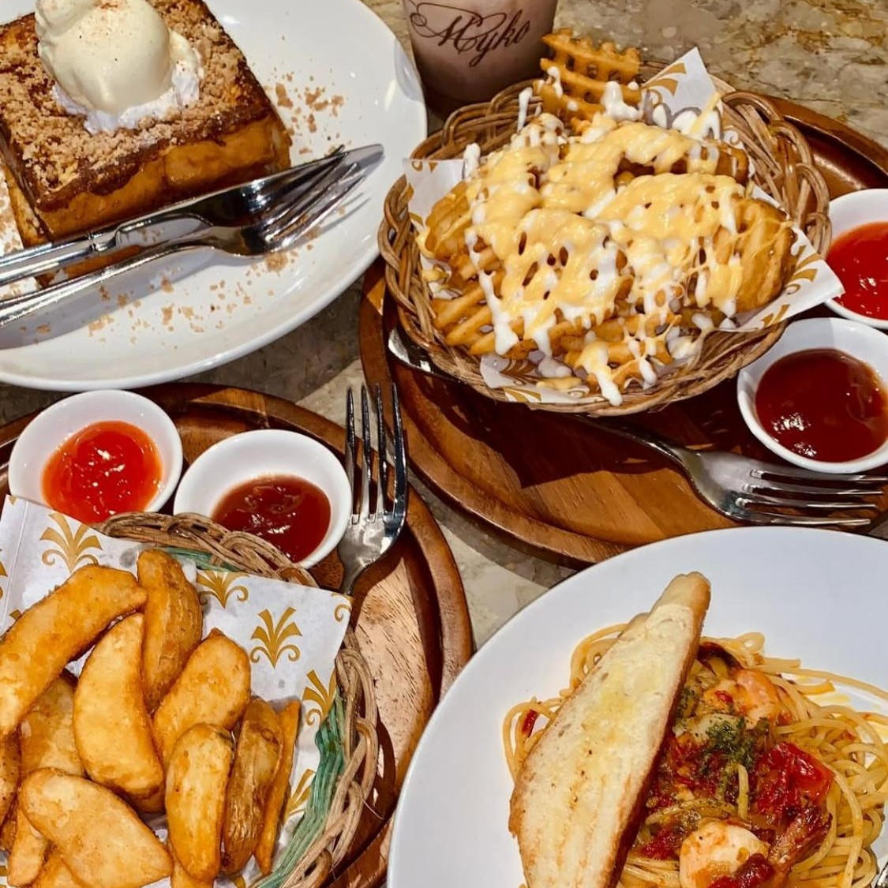
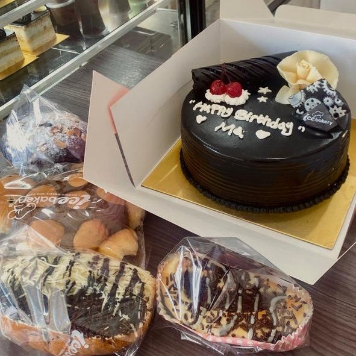
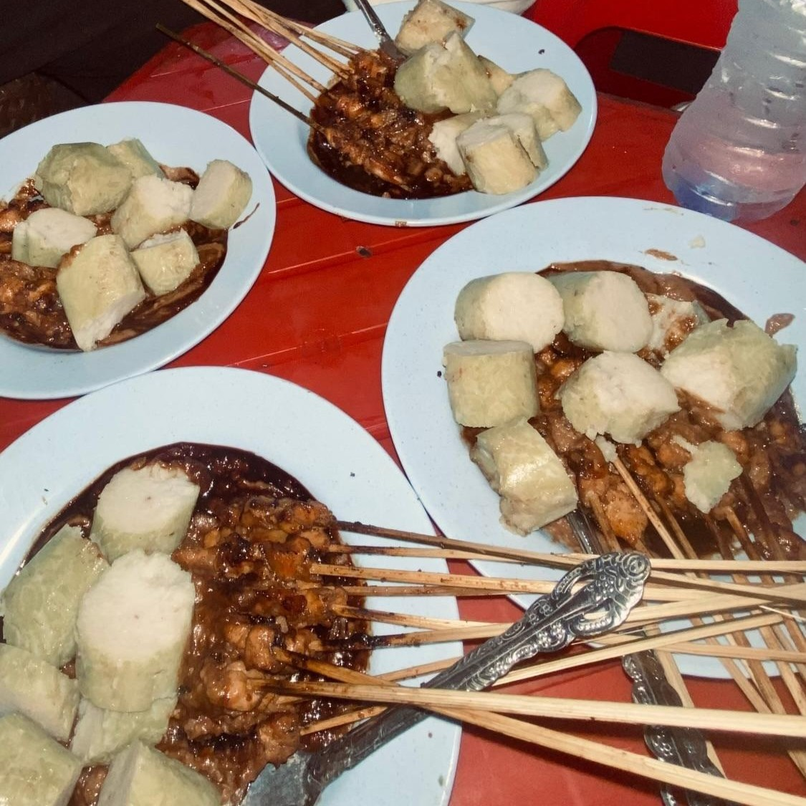

Cicip Kuliner
HOME
REVIEW LIST
RECOMMENDATIONS
ABOUT
TERPOPULER BULAN INI
#1
Cobain Menu Favorit di Marugame Udon
SELENGKAPNYA
#2
Ice Cream Pinkiee di Hadi
SELENGKAPNYA
#3
Mi Ayam Gerobakan dengan Rasa Juara
SELENGKAPNYA
DAFTAR MAKANAN TERBAIK
üçΩÔ∏è RESTORANT

Hidden Gem Ramen Murah, Anak Kos Wajib Coba

Ngemil Cantik di Myko Café
Cobain Menu Favorit di Marugame Udon
üçΩÔ∏è STREET FOOD
Pangsit Basah Chili Oil Best
Mi Ayam Gerobakan dengan Rasa Juara

Toko Kue baru di Biak yang lembut nya Juara

Sate Viral di Pettarani
CFD di UNHAS? Yuk Cari Tau Jajan Enaknya!/a>
üçΩÔ∏è DESSERT
Ice Bakery, Toko Kue Baru di Biak Lembutnya Juara
Ice Cream Sundae KFC
Ice Cream Pinkiee di Hadi